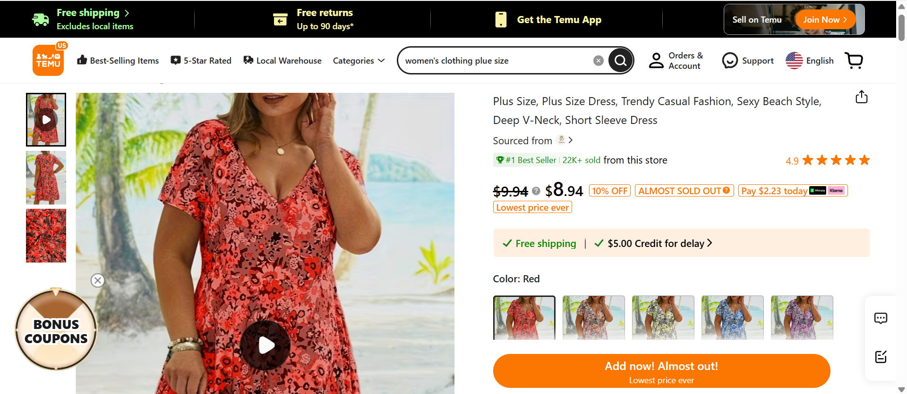
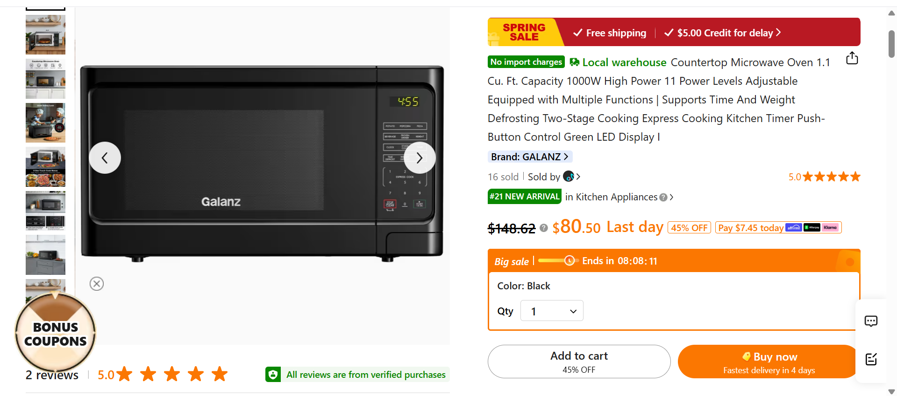
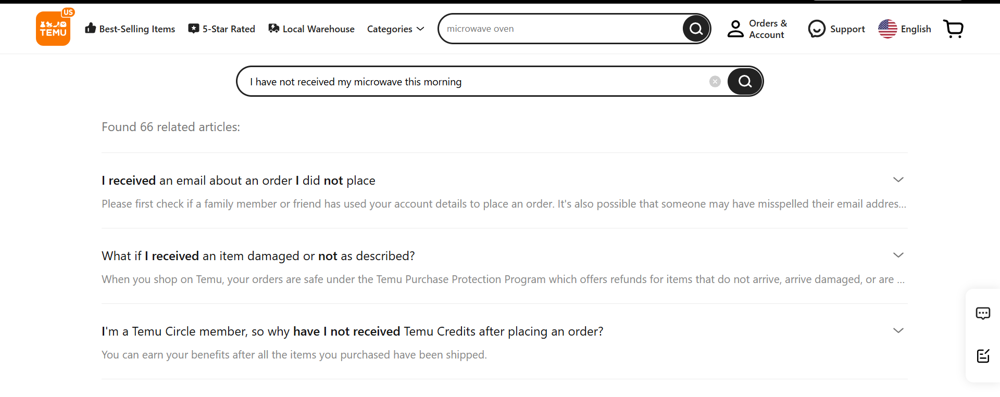
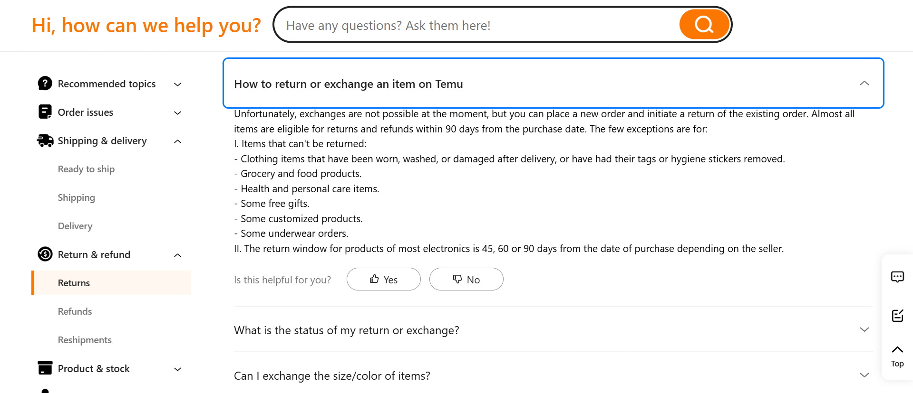

Task 1:Add a piece of women's clothing with plus-sized options from your Local Warehouse.
The subject went immediately to the local warehouse for the area and searched for women’s underwear first due to a miscommunication, then corrected to general clothing and found an item that fit the description given very quickly.
Completed in 1 minute 30 seconds

Task 2: You're really hungry, and you have 90$ in your bank account, and you need a microwave. Find a microwave that's both within your budget (including shipping + tax) and rated 5-stars so you don't blow your house up.
The subject used search bar to find the microwave selection, though it took a bit to find an item that fit all of the description. The subject mostly browsed what came up on first search.
Completed in 2 minutes 40 seconds

Task 3:You bought an item and it hasn't arrived. Contact the support Chatbot about this issue.
The subject did not go to the chatbot at first, they went to the items tab instead and then they eventually went to the chatbot and typed “I have not received my microwave this morning” into it. They got answers that were helpful,thouhg unspecific to their question.
Completed in 2 minutes 0 seconds

Task 4:Find a way to return an item.
The subject found where to return an item very quickly, as they were already in the support area and there was a tab for returning items along the left side of the support page.
Completed in 2 minutes 1 second

Task 5:You're the same person who had the microwave issue, and you're in search of a job for obvious reasons. You want to apply for Temu's team--find a way to do this
The subject scanned the support area they were already in and then went back to the homepage, where they seemed unsure where to go for a bit. They found the “careers” button at bottom of page and were promptly taken to LinkedIn.
Completed in 0 minutes 59 seconds
SUS Score Calculator
On a scale of 1-5 where 1 is strongly disagree and 5 is strongly agree. Note: the following fields have been pre-filled with the values found from the SUS test performed on the above data.